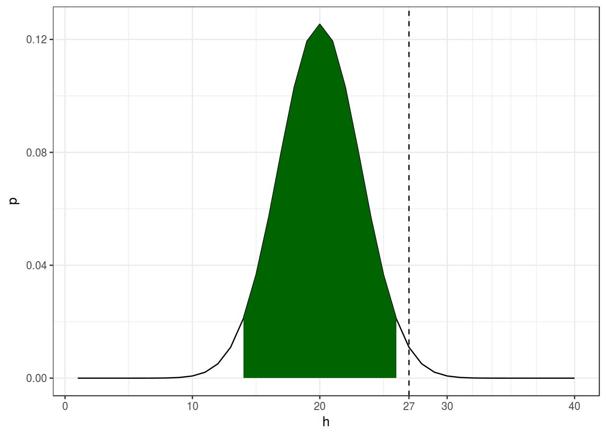
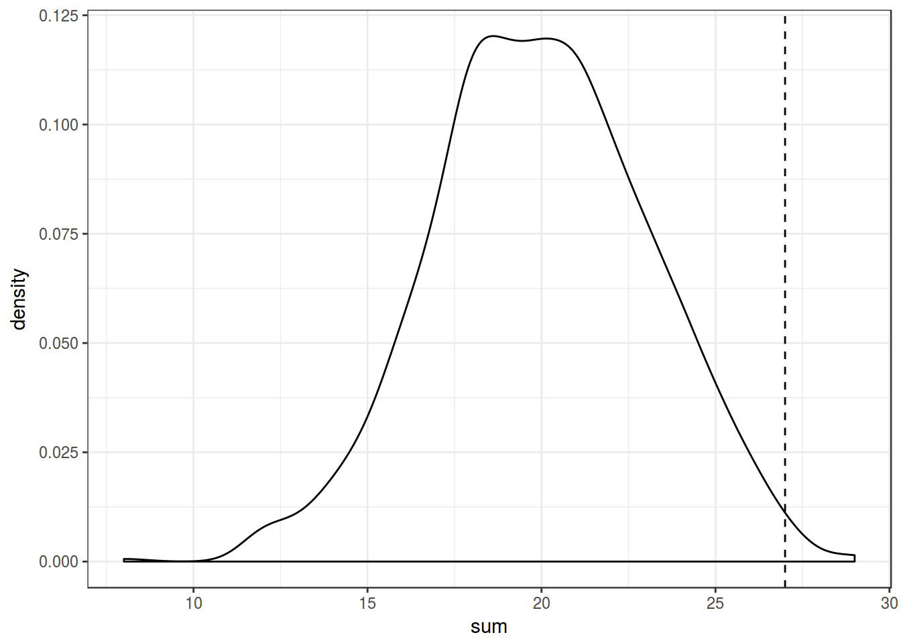
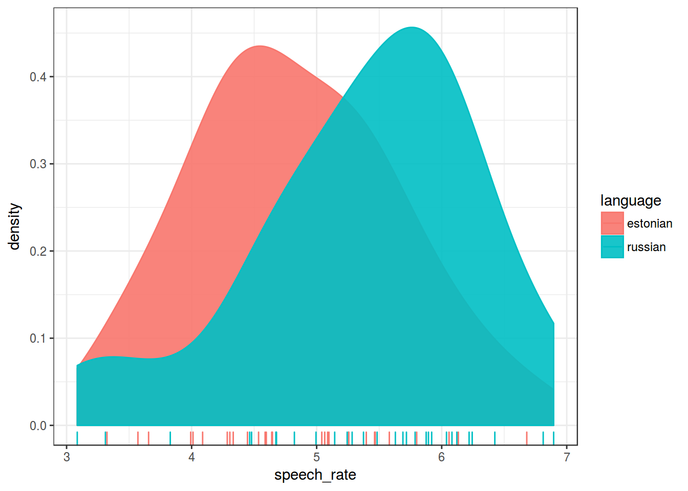
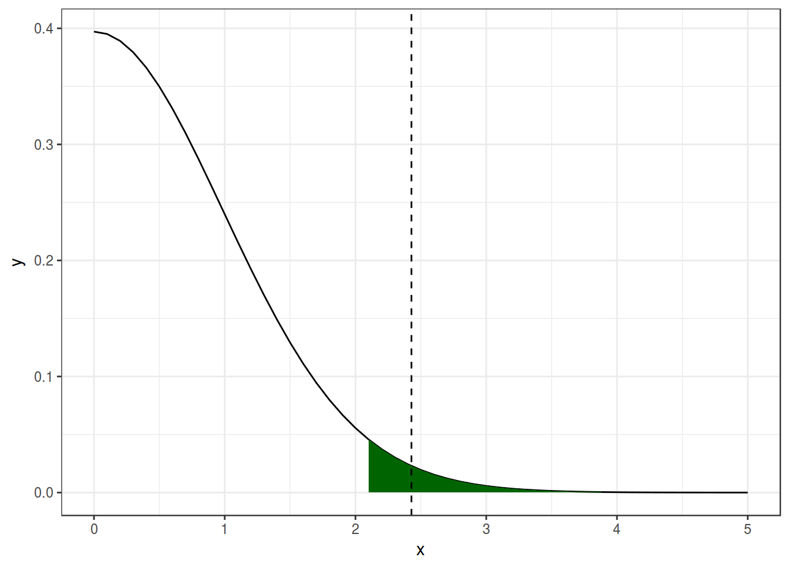
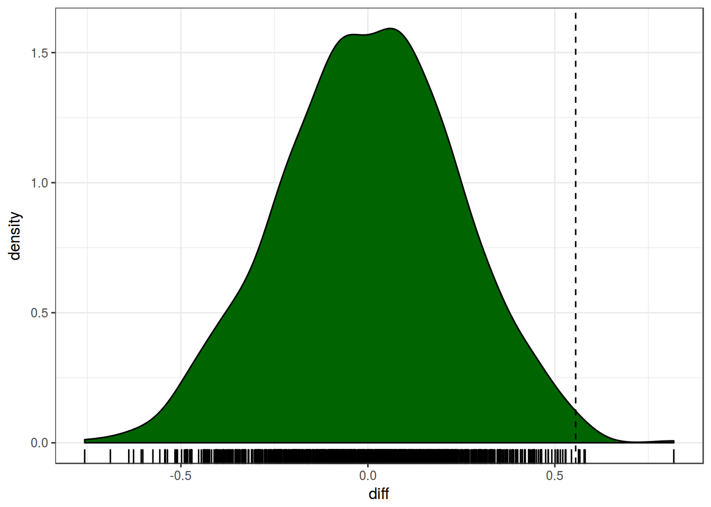
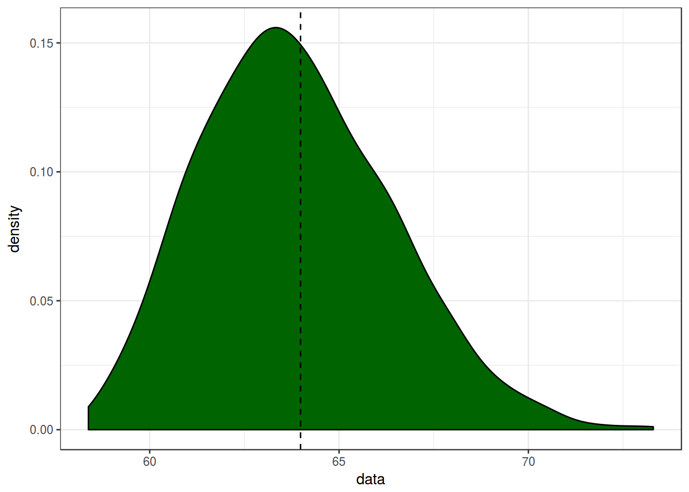

Statistics for Hackers
(after Jake VanderPlas 2016)
14.06.2018
1. Types of statistics
Saying popularized by Mark Twain:
There are three kinds of lies: lies, damned lies, and statistics.
- Frequentism
- Bayesianism
- Hackers’ approach
2. Simulation
Whether a coin is fair: 27 heads and 13 tails
The probability of obtaining h heads in n tosses of a coin with a probability of heads equal to p is given by the binomial distribution:
\[P(H = h|p, n) = \binom{n}{h}\times p^h\times(1-p)^{1-h}\]
Frequentist: binomial test
- H\(_0\) coin is fair
- α = 0.05

So we can reject H\(_0\) on p < 0.05.
Hacker: simulation
- Just simulate it!
library(mosaic)
set.seed(42)
do(1000)*
sum(sample(0:1, 40, replace = T)) ->
simulationssimulations %>%
mutate(greater = sum >= 27) %>%
group_by(greater) %>%
summarise(number = n())simulations %>%
ggplot(aes(sum))+
geom_density()+
geom_vline(xintercept = 27, linetype = 2)+
theme_bw()
3. Shuffling
rus_est <- read.csv("https://goo.gl/11qut0")
rus_est %>%
group_by(language) %>%
summarise(mean = mean(speech_rate))rus_est %>%
ggplot(aes(speech_rate, fill = language, color = language))+
geom_density(alpha = 0.9)+
geom_rug()+
theme_bw()
Is this difference of 0.549683 statistically significant?
- mean speech rate for russians: 5.382458
- mean speech rate for estonians: 4.826735
- difference: 0.555723
Frequentist: Two-sample t-test
- H\(_0\) Difference is not statistically significant.
- α = 0.05
- Welch’s t-statistics
\[t = \frac{\mu_A - \mu_B}{\sqrt{\frac{var_A}{n_A}+\frac{var_B}{n_B}}}\]
\(\mu\) – mean of each group
\(var\) – variance estimation
\(n\) – number of observation in each group
t <- t.test(rus_est[rus_est$language == "russian", ]$speech_rate,
rus_est[rus_est$language == "estonian", ]$speech_rate)
t.value <- t$statistic
t.value## t
## 2.42811- find the degrees of freedom
\[d.f. = \frac{(var_A/n_A+var_B/n_B)^2}{\frac{var_A/n_A^2}{n_A-1}+\frac{var_B/n_B^2}{n_B-1}}\]
t <- t.test(rus_est[rus_est$language == "russian", ]$speech_rate,
rus_est[rus_est$language == "estonian", ]$speech_rate)
df <- t$parameter
df## df
## 55.85354x <- seq(0, 5, 0.1)
data.frame(x, y = dt(x = x, df = df)) %>%
ggplot(aes(x, y))+
geom_line()+
geom_area(aes(x = ifelse(x>=qt(0.975, df), x, NA)), fill = "darkgreen")+
geom_vline(xintercept = t.value, linetype = 2)+
theme_bw()
So there is 0.0092123 probability to see this or more extreme result giving H\(_0\) is true.
Hacker: shuffling
If the language really don’t matter, then switching them shouldn’t change the result.
set.seed(42)
do(1000) *
(rus_est %>%
mutate(speech_rate = shuffle(speech_rate)) %>%
group_by(language) %>%
summarize(mean_value = mean(speech_rate))) ->
many.shuffles
tail(many.shuffles)Calculate the difference:
many.shuffles %>%
group_by(.index) %>%
summarise(diff = diff(mean_value)) ->
shuffle.diff
tail(shuffle.diff)shuffle.diff %>%
mutate(greater = diff >= 0.555723) %>%
group_by(greater) %>%
summarise(number = n())shuffle.diff %>%
ggplot(aes(x = diff)) +
geom_density(fill = "darkgreen")+
geom_rug()+
geom_vline(xintercept = 0.555723, linetype = 2)+
theme_bw()
4. bootstrapping
Calculate 95% confidence interval for mean [s] duration variable for heterosexual speakers from our orientation set.
95% CI formula again: \(mean \pm 1.96\frac{standard\ deviation}{\sqrt{number\ of\ observation}}\)
homo <- read.csv("http://goo.gl/Zjr9aF")
homo %>%
group_by(orientation) %>%
summarise(mean = mean(s.duration.ms),
CI = 1.96*sd(s.duration.ms)/sqrt(length(s.duration.ms)))Simulate the distribution by drawing samples with replacement.
library(bootstrap)
data <- homo[homo$orientation == "homo", "s.duration.ms"]
set.seed(42)
boot_mean <- bootstrap(data, nboot = 1000, theta = mean)
boot_mean$thetastar %>%
data.frame(data = .) %>%
ggplot(aes(data))+
geom_density(fill = "darkgreen")+
geom_vline(xintercept = mean(data), linetype = 2)+
theme_bw()
boot_mean$thetastar %>%
data.frame(data = .) %>%
summarise(mean = mean(data),
CI = 1.96*sd(data)/sqrt(length(data)))